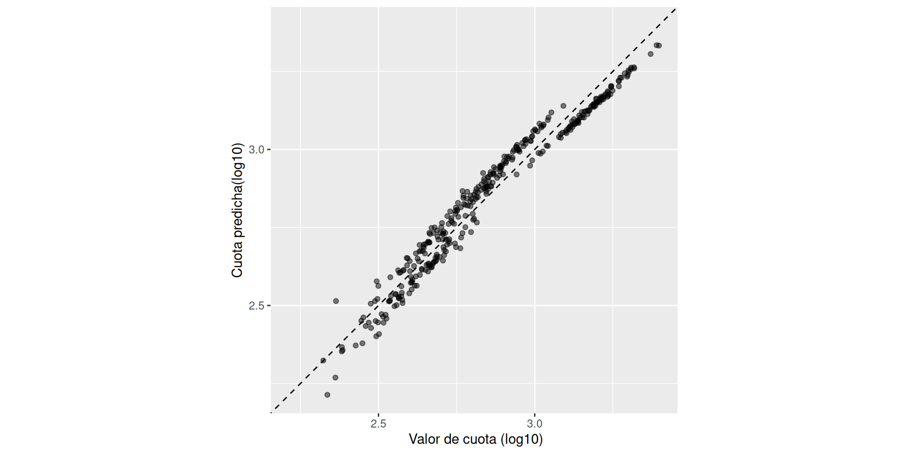
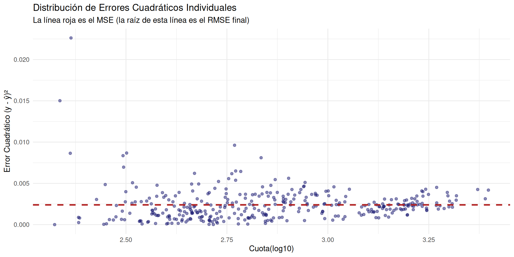
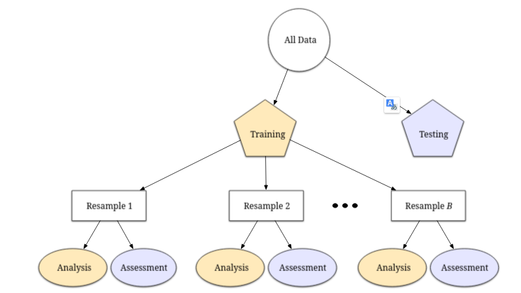
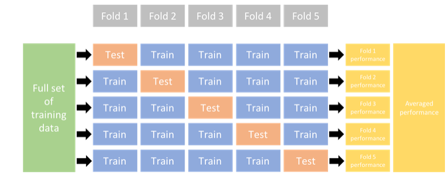

Curso: Introducción a la Ciencia de Datos
10 de septiembre de 2026
Definición
Consiste en reformular y transformar los valores de los predictores para que un modelo estadístico o de Machine Learning pueda utilizarlos de forma más efectiva.
Objetivo Principal
Representar de la mejor manera las características más importantes de los datos para optimizar el rendimiento predictivo.
Tip
Ejemplo Sencillo: Ratios
Si tienes dos predictores cuantitativos en tu dataset (por ejemplo, habitaciones y superficie), crear un nuevo predictor con la razón o ratio entre ambos es una forma básica pero potente de feature engineering.
skimr)| Name | prestamos_datos |
| Number of rows | 1171 |
| Number of columns | 8 |
| _______________________ | |
| Column type frequency: | |
| factor | 1 |
| numeric | 7 |
| ________________________ | |
| Group variables | None |
Variable type: numeric
| skim_variable | n_missing | complete_rate | mean | sd | p0 | p25 | p50 | p75 | p100 | hist |
|---|---|---|---|---|---|---|---|---|---|---|
| X | 0 | 1 | 586.00 | 338.18 | 1.00 | 293.50 | 586.00 | 878.50 | 1171.00 | ▇▇▇▇▇ |
| ingreso_mensual | 0 | 1 | 2965.80 | 804.83 | 579.23 | 2442.30 | 2926.90 | 3522.37 | 5872.63 | ▁▆▇▂▁ |
| monto_prestamo | 0 | 1 | 19956.49 | 5128.25 | 4303.15 | 16564.29 | 19939.00 | 23355.99 | 35936.38 | ▁▅▇▃▁ |
| plazo_meses | 0 | 1 | 29.31 | 13.56 | 12.00 | 12.00 | 24.00 | 36.00 | 48.00 | ▇▇▁▇▇ |
| score_crediticio | 0 | 1 | 647.08 | 81.86 | 360.47 | 596.37 | 647.96 | 700.64 | 898.56 | ▁▃▇▅▁ |
| edad | 0 | 1 | 42.75 | 13.18 | 21.00 | 31.00 | 42.00 | 54.00 | 65.00 | ▇▇▇▇▇ |
| cuota | 0 | 1 | 839.32 | 504.10 | 164.68 | 462.53 | 657.85 | 1099.42 | 2608.00 | ▇▅▂▁▁ |
Variable type: factor
| skim_variable | n_missing | complete_rate | ordered | n_unique | top_counts |
|---|---|---|---|---|---|
| trabajo | 0 | 1 | FALSE | 3 | for: 409, inf: 390, mon: 372 |
El paquete recipes es uno de los pilares fundamentales del ecosistema tidymodels (junto a parsnip para especificación de modelos).
Ventajas Clave
1.Unificación: Combina múltiples tareas de transformación en un único objeto.
2.Reutilización: Aplica la misma secuencia de transformaciones a nuevos conjuntos de datos.
Para evitar filtración de datos y mantener el código limpio, se integra la receta y el modelo dentro de un workflow:
# 1. Especificar el modelo con parsnip
lm_spec <- linear_reg() |>
set_engine("lm")
# 2. Unir receta y modelo en un workflow
lm_wflow <- workflow() |>
add_recipe(simple_ames) |>
add_model(lm_spec)
# 3. Entrenar todo el workflow
lm_fit <- fit(lm_wflow, data = ames_train)
# 4. Predecir sobre datos de prueba (aplica la receta automáticamente)
predict(lm_fit, new_data = ames_test)Uso de extracción de características (ej. PCA) o eliminación de variables redundantes.
Estimación de valores ausentes mediante submodelos (KNN, árboles, medias).
Uso de transformaciones logarítmicas o Box-Cox para corregir sesgos asimétricos.
Normalización de predictores numéricos cuando se emplean métricas de distancia geométrica.
step_unknown()
NA) en niveles explícitos (por defecto “unknown”).step_novel()
step_other()
threshold) de frecuencia.step_dummy()
one_hot = TRUE.step_log()
step_mutate()
step_center()
step_scale()
step_normalize()
step_center() + step_scale().step_impute_mean() / step_impute_median(): Imputa variables numéricas usando la media o la mediana del train set.step_impute_mode(): Imputa la moda para variables categóricas o factores.step_impute_knn(): Imputa basándose en los \(K\) vecinos más cercanos.⚠️ Regla de Oro en recipes
Todas las estadísticas de imputación y escala (media, mediana, \(SD\), vecinos) se calculan únicamente sobre el conjunto de entrenamiento (train set) para evitar la fuga de datos (data leakage).
Nota
Técnica para condensar información creando un número menor de nuevas variables a partir de los predictores originales.
recipesstep_pca() — Componentes Principales
step_ica() — Componentes Independientes
step_nnmf() — Factorización de Matrices No Negativas
step_mds() — Escalado Multidimensional
💡 Recuerda en tidymodels:
Estas transformaciones deben aplicarse después de normalizar o estandarizar los datos (step_normalize()).
Desbalance de Clases
A diferencia de los pasos tradicionales, estas transformaciones modifican las filas del conjunto de datos. Se utilizan cuando una clase domina la muestra (ej. 95% “No” vs. 5% “Sí”).
Desbalance de Clases
A diferencia de los pasos tradicionales, estas transformaciones modifican las filas del conjunto de datos. Se utilizan cuando una clase domina la muestra (ej. 95% “No” vs. 5% “Sí”).
📦 Paquete themis
Para usar estas técnicas en recipes, se instalan y cargan las funciones del paquete adicional themis (ej. step_downsample(), step_smote()).
Incorporamos los pasos previos
prestamo_reci <- recipe(cuota10 ~ ingreso_mensual + monto_prestamo + plazo_meses + score_crediticio + edad + trabajo, data = prestamos_train) |>
step_mutate(razpremon = monto_prestamo/ingreso_mensual) |>
step_log(monto_prestamo, base = 10) |>
step_normalize(all_numeric_predictors()) |>
step_dummy(all_nominal_predictors())
tidy(prestamo_reci)# A tibble: 4 × 6
number operation type trained skip id
<int> <chr> <chr> <lgl> <lgl> <chr>
1 1 step mutate FALSE FALSE mutate_sXCmN
2 2 step log FALSE FALSE log_GxHFj
3 3 step normalize FALSE FALSE normalize_VwmBV
4 4 step dummy FALSE FALSE dummy_Xxq14 # A tibble: 4 × 6
number operation type trained skip id
<int> <chr> <chr> <lgl> <lgl> <chr>
1 1 step mutate TRUE FALSE mutate_sXCmN
2 2 step log TRUE FALSE log_GxHFj
3 3 step normalize TRUE FALSE normalize_VwmBV
4 4 step dummy TRUE FALSE dummy_Xxq14 “Un enfoque cuantitativo nos permite entender el modelo, comparar diferentes enfoques y optimizar su rendimiento mediante validación empírica.”
yardstick: Herramienta central de tidymodels para medir el desempeño mediante estructuras de datos tidy.Elegir la métrica incorrecta puede llevar a conclusiones erróneas al optimizar un modelo.
Diferencia clave: RMSE mide qué tan cerca están los valores; \(R^2\) mide qué tan bien se mueven juntos.
\[\text{RMSE} = \sqrt{\frac{1}{n} \sum_{i=1}^{n} (y_i - \hat{y}_i)^2}\]
\[R^2 = 1 - \frac{\text{SS}_{\text{res}}}{\text{SS}_{\text{tot}}} = 1 - \frac{\sum (y_i - \hat{y}_i)^2}{\sum (y_i - \bar{y})^2}\]
Resumen en una frase
El RMSE evalúa la precisión del modelo en la escala real de los datos, mientras que el \(R^2\) mide la fuerza de la asociación lineal entre lo observado y lo predicho.
\[\text{MAE} = \frac{1}{n} \sum_{i=1}^{n} |y_i - \hat{y}_i|\]
¿Tiene sentido usar métricas de predicción en un modelo inferencial?
Conclusión: La fidelidad del modelo a los datos debe acompañar siempre a las conclusiones inferenciales.
yardstick en RLas funciones de yardstick tienen una interfaz consistente orientada a data frames:
\[\text{funcion}(\text{data}, \text{truth}, \text{estimate})\]
data: Tibble o data frame con los resultados.truth: Columna con los valores reales observados (\(y\)).estimate: Columna(s) con las predicciones del modelo (\(\hat{y}\)).
# 1. Calcular el error al cuadrado por cada fila
prestamo_test_res_fin |> mutate( error_cuadrado = (cuota10 - .pred)^2 ) |> ggplot(aes(x = cuota10, y = error_cuadrado)) + geom_point(alpha = 0.5, color = "midnightblue") + geom_hline(
yintercept = mean((prestamo_test_res_fin$cuota10 - prestamo_test_res_fin$.pred)^2), color = "firebrick", lty = 2, size = 1 ) + labs( title = "Distribución de Errores Cuadráticos Individuales", subtitle = "La línea roja es el MSE (la raíz de esta línea es el RMSE final)", x = "Cuota(log10)",
y = "Error Cuadrático (y - ŷ)²"
) + theme_minimal()
# A tibble: 2 × 3
.metric .estimator .estimate
<chr> <chr> <dbl>
1 rmse standard 110.
2 mae standard 90.6tidymodelsObjetivo: Crear un workflow que prediga el precio de los diamantes (price) según sus características usando el dataset diamonds.
rsample):
diamonds en un \(80\%\) para entrenamiento y \(20\%\) para prueba.recipes):
price ~ carat + cut + color + clarity.price y al predictor carat.step_dummy).parsnip):
"lm".workflows):
workflow() ajústar datos de entrenamiento.yardstick):
Nota
Sistemas de simulación empírica que emulan el proceso de entrenar un modelo con ciertos datos y evaluarlo con datos diferentes.

Esquema general de remuestreo en Tidymodels
Para evitar confusiones con la división inicial (Training vs. Testing), en remuestreo usamos términos específicos:
🏋️ Set de Análisis (Analysis Set)
📏 Set de Evaluación (Assessment Set)
💡 La regla de oro
Si realizas 10 iteraciones, ajustarás 10 modelos independientes sobre 10 Analysis sets y promediarás las 10 métricas obtenidas en sus respectivos Assessment sets.

Validación Cruzada
rsample):# 5-fold cross-validation
# A tibble: 5 × 2
splits id
<list> <chr>
1 <split [654/164]> Fold1
2 <split [654/164]> Fold2
3 <split [654/164]> Fold3
4 <split [655/163]> Fold4
5 <split [655/163]> Fold5